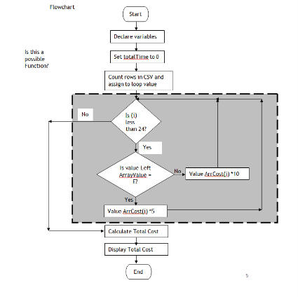
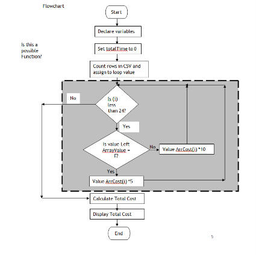

Visual Studio 2013 Lesson : Flow Charts. (data flow diagrams)
[Lesson 38] <<[Contents] >>[Lesson 40]
What is a flowchart?
 A
flowchart is a diagram that shows the breakdown of a
task or system into all of the necessary steps.
A
flowchart is a diagram that shows the breakdown of a
task or system into all of the necessary steps.
Each step is represented by a symbol and connecting lines show the step-by-step progression through the task.
Have a look at the diagram on the right. It shows the process of ordering a burger.
There is a clear start, a series of steps, a clear direction of flow and a clear end or finish point.
This is a very simple flowchart. For some tasks or systems, the flowchart can be very complex and detailed.
Example using loop
Declare variables
Set total time = 0
Loop once for each row in CSV
IF first character in list is “E”
Multiply corresponding cost arrCost by 10
Else
Multiply corresponding cost arrCost by 5
Calculate totalCost
Write value to message box

Symbols Used in Flowcharts
Set total time = 0
Loop once for each row in CSV
IF first character in list is “E”
Multiply corresponding cost arrCost by 10
Else
Multiply corresponding cost arrCost by 5
Calculate totalCost
Write value to message box

Symbols Used in Flowcharts